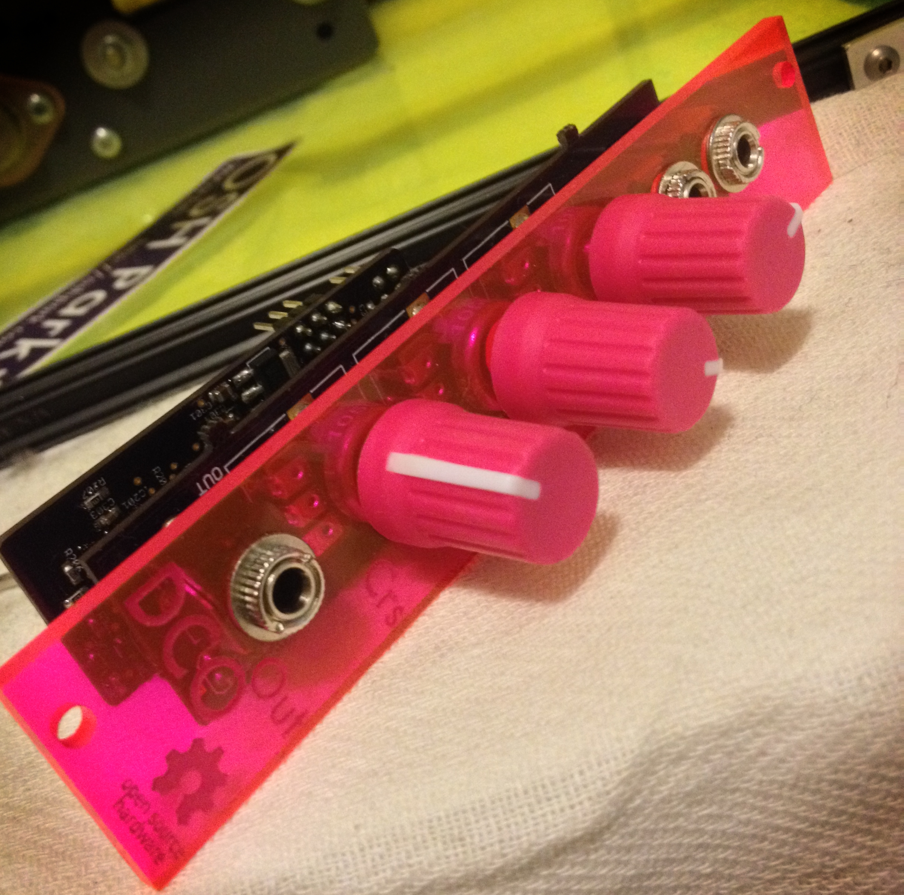
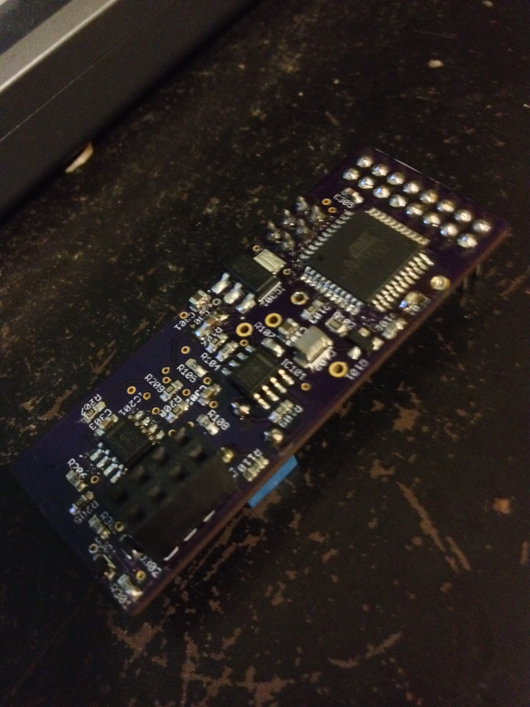

Eurorack Digitally Controlled Analog Oscillator
December 1, 2013
The latest installment in my open-source eurorack series (see previous installments here and here) is an 80s-style digitally controlled oscillator. Since a DCO is perhaps a bit less familiar than my previous modules, I'll first describe a bit of its history and design. If you're curious about the fabrication process or eager to access the schematics, skip ahead to the fabrication section below.

"Digitally Controlled Oscillator" is primarily a marketing term, so it doesn't really have a precise technical definition. Most generally, it's an oscillator that is somehow "more analog" than a fully digital oscillator, where the signal is output direct from a DAC, but yet "less analog" than a traditional VCO. Sometimes a "DCO" is a fully analog oscillator being driven with a control voltage from a DAC, and sometimes "DCO" means a sum of digitally-created square waves. However, the most common definition is the one that this module falls under: a fully analog saw tooth oscillator hard-synced to a digital counter.
This design (which is the only thing I'll call a 'DCO' from here on out) was first popularized by the Roland Juno series, and became quite popular for a time, especially in low cost polyphonic analogs. During the analog resurgance of the late 2000s/early 2010s, DCOs again became a go-to option, appearing in the Prophet 08 and the Moog Minitaur, among others.
DCOs have a number of differences from the "more analog" VCOs: their tuning is very stable because the frequency ultimately comes from a crystal oscillator. This makes them have less "analog drift", and generally speaking this makes for better bass tones. The main price you pay for this stability is coarser tuning - since the tone is coming from an integer divide down of a fixed clock, there's a limited number of "tuning steps", where an analog oscillator would have completely continuous tuning.
The core of a DCO is a high speed (usually in the low megahertz) digital clock. This clock is then fed into a counter, which emits a pulse each time the count reaches a certain value. That pulse then is connected to a switch that will short accross a charging capacitor, resetting the capacitor's voltage back to zero. This creates a saw-tooth wave across the capacitor, whose frequency is set by the count value.

As always, all schematics and source code are available under a permissive license at github.
The microcontroller I used was an AVR xmega32A4U, programmed using an Arduino port forked from the Xmegaduino project by myself and Brendan Powers, located here. If you're interested in Arduino programming on the xmega, I highly recommend you check out our port as it contains numerous bug fixes over the original, now unmaintained Xmegaduino project.
In addition to an arduino sketch, my design includes a haskell pre-processor to generate look-up tables for the tuning. Anyone developing a DCO may find the code helpful.
The fabrication stack was the same as last time, that is, laser-cut stencils from danger awesome, and PCBs from OSH Park. Everything worked quite well, except for the TQFN package I originally spec'ed for the microcontroller - TQFNs are quite hard to work with at home. If you're a hobbiest assembling boards at home, I highly recommend choosing the much more friendly TQFP package, if you have the option.
All images and text are licensed under a Creative Commons Attribution 3.0 United States License, except as noted. Linked code, and embedded code examples are licensed separately.